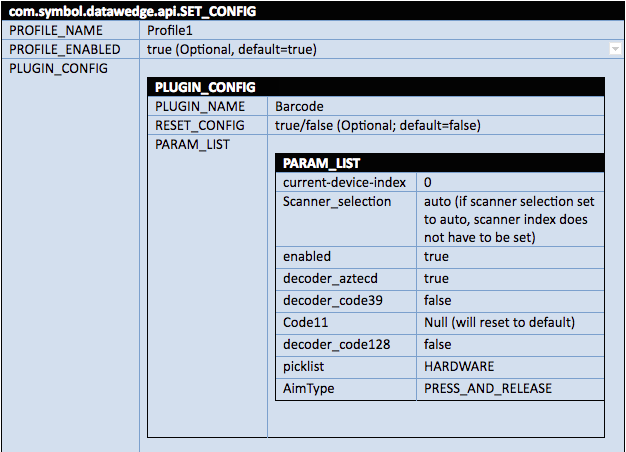

概要
DataWedge API は、主に Android インテントによって動作します。これは、他のアプリケーションが使用できる固有のコマンドで、基盤となるハードウェアの API に直接アクセスしなくても、データ キャプチャを制御できます。1 つのアクション インテントのエクストラとして複数のインテントを実装し、単一のインテント アクションを使用して、エクストラとして複数の API 呼び出しの送信を許可します。このガイドでは、DataWedge でサポートされているインテントの機能と、それがもたらす、データ キャプチャおよび DataWedge のプロファイルや設定への影響について説明します。
注: デバイスの再起動直後に DataWedge ステータス (Get DataWedge ステータスの取得) を照会したり、インテント API を DataWedge に送信したりする際、DataWedge が起動しなかったり、初期化プロセスを完了しなかったりした場合、DataWedge はインテントを受信できません。DataWedge からの応答が DataWedge に送信されたインテント API から受信されない場合、再試行メカニズムを実装することをお勧めします。
その他のリソース:
- インテントの使用 - インテントの簡単な説明と、インテントを使用するように DataWedge を構成する方法の説明
- DataWedge API - 利点と使用方法 - Zebra エンジニアの Darryn Campbell が作成
- DataWedge のサンプル アプリ - インテントを介してスキャン データを受信する方法を示します
要件
DataWedge API を使用するには、Java プログラミングの経験があり Android インテントを熟知している必要があります。また、DataWedge の使用方法、機能、および用語についての知識も必要です。DataWedge の詳細については、DataWedge の「ご使用の前に」ガイドおよびプロファイルを参照してください。また、Zebra デバイスに付属のインテグレータ ガイドの DataWedge のセクションもお読みいただくと参考になります。
インテントの送信
複数の DataWedge API 呼び出しを単一のインテント アクションのエクストラとして渡すことができます。構文は、次のとおりです。
// Send multiple intents as extras
Intent i = new Intent();
i.setAction("com.symbol.datawedge.api.ACTION");
String[] profiles = {"MainInventory"};
i.putExtra("com.symbol.datawedge.api.DELETE_PROFILE", profiles);
i.putExtra("com.symbol.datawedge.api.GET_VERSION_INFO", "");
結果の受信
DataWedge に情報を照会するインテント (「GET_ACTIVE_PROFILE」など) では、結果を受信するために、アプリを登録する必要があります。このとき、結果インテントのアクションとカテゴリを識別するフィルタが使用されます。以下のコードでは、結果を受信するためにブロードキャスト レシーバを登録する方法を示しています。
// Register broadcast receiver and filter results
void registerReceivers() {
IntentFilter filter = new IntentFilter();
filter.addAction("com.symbol.datawedge.api.RESULT_ACTION");
filter.addCategory("android.intent.category.DEFAULT");
registerReceiver(mybroadcastReceiver, filter);
}
//Receiving the result
private BroadcastReceiver myBroadcastReceiver = new BroadcastReceiver(){
@Override
public void onReceive(Context context, Intent intent){
Bundle extras = getIntent().getExtras();
if (intent.hasExtra("com.symbol.datawedge.api.RESULT_GET_ACTIVE_PROFILE")){
String activeProfile = extras.getString("com.symbol.datawedge.api.RESULT_GET_ACTIVE_PROFILE");
重要: DataWedge API コマンドは、キューに投入されず、前のインテントの処理で DataWedge がビジー状態のときに送信された場合、無視されることがあります。API コマンドが送信されると、他の操作で DataWedge がビジー状態になっていない場合にのみコマンドが実行されます。例外:
STOP_SCANNING- ただちにスキャン操作を中断しますDISABLE_PLUGIN- 現在のスキャナ入力プラグインをただちに無効にします
確実に正しく実行させるために、重要なコマンドの前に遅延コードを挿入することをお勧めします。例については、SoftScanTrigger API を参照してください。
ネストされたバンドル
ネストされたバンドルにより、値「bundle」を別のバンドルの 1 つの値として含めることができます。バンドルは、複数レイヤの深さにすることもできます。たとえば、以下の図は、API 呼び出し SET_CONFIG 内にネストされた PLUGIN_CONFIG[0] バンドル内にネストされた PARAM_LIST バンドルを示しています。ネストは、プロファイルに含まれる多くのパラメータをインテントで構成するために必要です。
この図はさらに、SET_CONFIG API の呼び出しに、2 つ目のネストされたバンドルである PLUGIN_CONFIG[n] を実装できることを示しており、この 2 つ目のバンドルには、独自の PARAM_LIST バンドルを含めることができます。

例
以下の Java コードでは、ネストされたバンドルを実装しています。
//Using the SET_CONFIG API and a nested bundle.
Bundle bMain = new Bundle();
bMain.putString("PROFILE_NAME","Profile2");
bMain.putString("PROFILE_ENABLED", "true");
bMain.putString("CONFIG_MODE","CREATE_IF_NOT_EXIST");
bMain.putString("RESET_CONFIG", "true");
Bundle bundleApp1 = new Bundle();
bundleApp1.putString("PACKAGE_NAME","com.symbol.emdk.simulscansample1");
bundleApp1.putStringArray("ACTIVITY_LIST", new String[]{
"com.symbol.emdk.simulscansample1.DeviceControl",
"com.symbol.emdk.simulscansample1.MainActivity",
"com.symbol.emdk.simulscansample1.ResultsActivity.*",
"com.symbol.emdk.simulscansample1.ResultsActivity2",
"com.symbol.emdk.simulscansample1.SettingsFragment1"});
Bundle bundleApp2 = new Bundle();
bundleApp2.putString("PACKAGE_NAME","com.example.intents.datawedgeintent");
bundleApp2.putStringArray("ACTIVITY_LIST", new String[]{
"com.example.intents.datawedgeintent.DeviceControl",
"com.example.intents.datawedgeintent.MainActivity",
"com.example.intents.datawedgeintent.ResultsActivity",
"com.example.intents.datawedgeintent.SettingsFragment1"});
Bundle bundleApp3 = new Bundle();
bundleApp3.putString("PACKAGE_NAME","*");
bundleApp3.putStringArray("ACTIVITY_LIST", new String[]{"*"});
Bundle bundleApp4 = new Bundle();
bundleApp4.putString("PACKAGE_NAME","com.symbol.myzebraapp");
bundleApp4.putStringArray("ACTIVITY_LIST", new String[]{"*"});
bMain.putParcelableArray("APP_LIST", new Bundle[]{
bundleApp1
,bundleApp2
,bundleApp3
,bundleApp4
});
Intent i = new Intent();
i.setAction("com.symbol.datawedge.api.ACTION");
i.putExtra("com.symbol.datawedge.api.SET_CONFIG", bMain);
this.sendBroadcast(i);
関連ガイド:
関連項目:
Zebra Support Central | インテグレータ ガイド、製品マニュアル、ソフトウェア ダウンロードおよびサポート
LaunchPad | Zebra 開発者コミュニティ
インテント | Android 開発者
インテントおよびインテント フィルタ | Android 開発者
Android インテント | チュートリアル